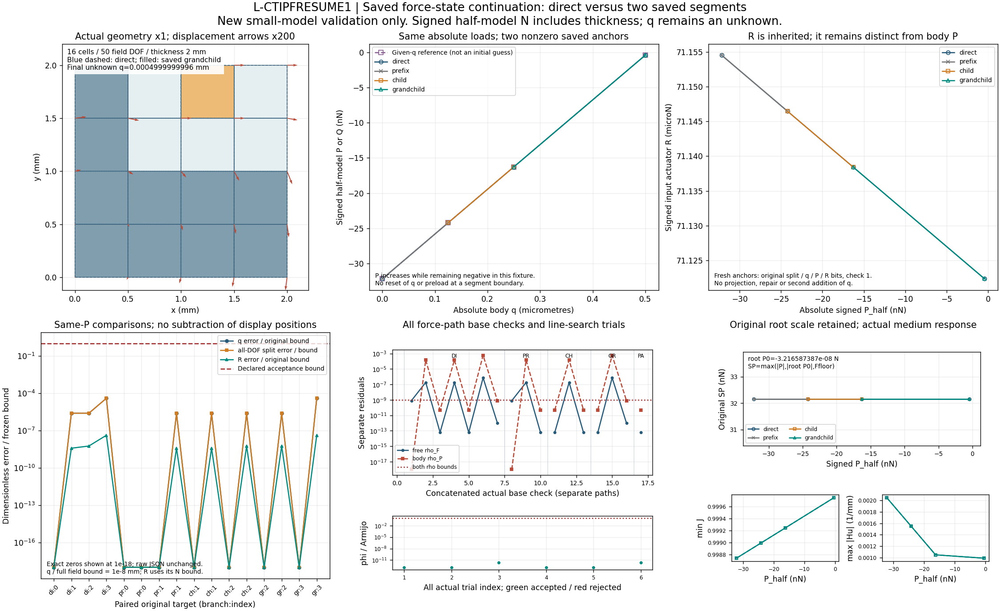

L-CTIPFRESUME1 · 力控保存态续载
2026-10-23 · 已批准唯一执行 · PASS／科学窗口已关闭
保留非零绝对q、预载P及原split的力控保存态续载
已安装2份修改和1份新源码；其余55份保持原字节。12项有限验证通过，7条16单元／50DOF真实小模型路径、37次有限代数／注入／拒绝调用。正式r9物理条件与原结果保持，本卡没有执行正式r9续载或HP。
旧fixed父力控入口继续支持q=0起点；新extend_native_guided_force只追加严格增加的绝对有符号半模型载荷。非零q不归零，原lift/w/R原样继承，lift只覆盖不再叠加。段起点P与最初root P0分开：SP仍=max(abs(P),abs(root P0),Ffloor)。完整前缀是谱系，本child只实际执行其fresh段起点和新增后缀。
实际分支状态
partial是预先规定的第二次T constraint_failure持久化检查；它保持非零fresh锚点及原父树，不代表物理失稳载荷，不作为成功数值路径。固定父是第7条真实路径，另保普通摘要中的fixed_parent_summary。
实际小模型图

仅链接本窗口已经生成并检查一次的原PNG。真实结构变形×1，箭头×200；网格重合及接近零误差的显示限制见原QA。全部17次force base check及6条trial merit依原renderer记录；没有新绘图、科学数组读取或再次像素检查。
原值接受态与力口径
表格直接显示已保存普通JSON原值，不插值、不补未生成状态。1.0根入口没有根增量字段时显示未记录；不伪补新字段。P已含原厚度，是半模型有符号外载；ON-body total Fx与施加P反号，total含material/Hu；R为保持机构平均输入的独立反力。没有把这些弱力认作压力或纯接触承载能力。
同原目标的预定功能比较
16组比较均来自原验证摘要；direct/分段同P比较及给q参考分开，完整物理位移差使用四split项math.fsum。fresh状态硬身份与这些预先工程界是两个独立检查，不以误差小替代原始身份和原生产门。
恢复和下一步
原窗口ZIP为唯一科学payload依赖，含本轮自建夹具、接受缓存、候选58源及完整原字节日志；交付未解包、重封或复制整个candidate树。四份SUP2监督及四本同实例身份日志单独可查；其他start/普通stdout日志留在原ZIP。当前可用能力是经小模型验证的单调力控保存态续载，正式r9下一小增量需另核父态、任务和独立窗口。
批准卡为历史原字节副本，原pending标题与相对接口／验证链接应按相邻preparation目录上下文阅读；当前状态以本页、RESULTS和USAGE为准。原核、门、正式任务、HP和压力／有效夹持／释放／稳定性资格没有升级。